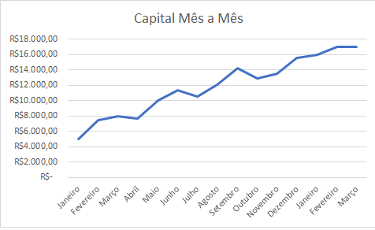

<!-- <div class="row">
  <div class="col-xs-12">
    <canvas class="my-4 w-100" id="myChart" width="900" height="380"></canvas>
  </div>
</div>

<script src="https://cdnjs.cloudflare.com/ajax/libs/Chart.js/2.7.1/Chart.min.js"></script>
<script>
    var ctx = document.getElementById("myChart");
    var myChart = new Chart(ctx, {
      type: 'line',
      data: {
        labels: ["Sunday", "Monday", "Tuesday",  "Wednesday", "Thursday", "Friday", "Saturday"],
        datasets: [{
          data: [15339, 21345, 18483, 24003, 23489, 24092, 12034],
          lineTension: 0,
          backgroundColor: 'transparent',
          borderColor: '#007bff',
          borderWidth: 4,
          pointBackgroundColor: '#007bff'
        }]
      },
      options: {
        scales: {
          yAxes: [{
            ticks: {
              beginAtZero: false
            }
          }]
        },
        legend: {
          display: false,
        }
      }
    });
  </script> -->

  <div class="col-md-8">
      
  </div>


